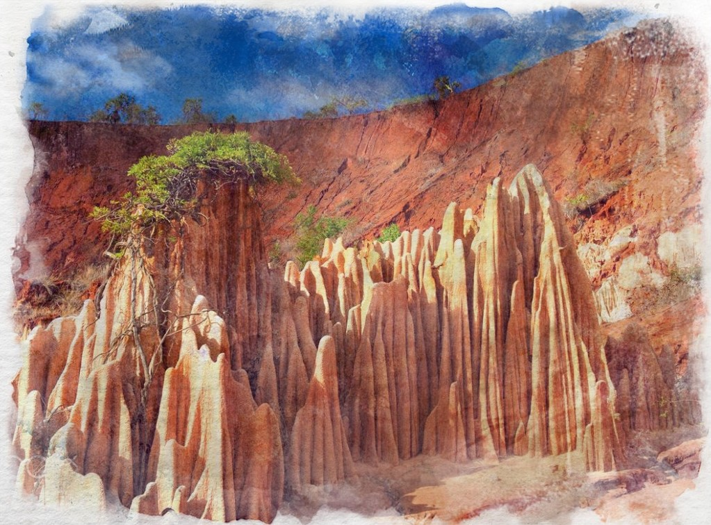

Laterite
Formed by compressed sediment, it is an iron or nickel-rich rock that becomes soft when exposed to water, allowing it to easily be cut and shaped. It can be used as a solid foundation stone in tropical regions and it also makes for a good aquifer.